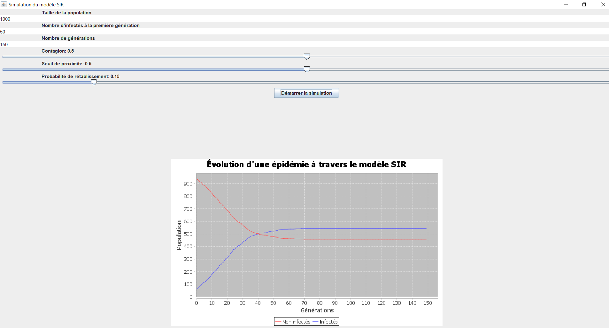

Dans ce projet réalisé à l'IUT de Saint-Dié-des-Vosges, en France, 2 amis et moi-même avons mis en place un programme permettant de modéliser et prévoir les évolutions d'une épidémies, suivants plusieurs paramètres qu'il est possible de faire varier. Ainsi, selon la durée de contagion, la population totale, le temps de guérison, ... Nous pouvons donc prévoir ce que va devenir ce virus. Pour cela nous nous sommes appuyés sur les formules mathématiques provenant du modèle SIR, visant à prévoir les variations statitiques des épidémies
Le pojet initiale est disponible sur ce Github. A l'origine, le projet avait donc pour but de nous faire varier 6 paramètres :
Après avoir judicieusement choisit nos paramètres, nous obtenons un schéma prévisionnel de l'épidémie de ce type :
Afin d'améliorer ce projet existant déjà bien avancé de notre groupe d'amis, j'ai décidé d'ajouter la fonctionnalité suivante :
L'ajout de cette fonctionnalité à notre projet était selon moi un ajout nécessaire. En effet, avant cela pour garder une trace d'une simulation il fallait faire une capture d'écran, ce qui n'était pas toujours facile et évident pour tout le monde. Avec cette mise à jour, chaque simulation sera enregistrée et donc consultable à partir de ses images.
Pour effectuer cette maintenance, j'ai pu réfléchir à plusieurs manières de réaliser le travail.
Tout d'abord, il faut savoir que le projet initiale était en Java, langage que nous avons beaucoup utilisé durant le DUT, et il était donc
judicieux de réaliser cette maintenance dans le même langage.
Concernant la manière de procéder, plusieurs solutions s'offraient à moi. Le graphique utilisé est une "chart" Java, disponible via la librairie graphique "jfreechart". J'ai d'abord pensé à créer le chemin d'un fichier, et d'y enregistrer
directement la chart, grâce à l'utilisation de ChartUtils, ce qui est une opération assez simple ne prenant qu'une à deux lignes. Cependant, avec
cette solution, seul le graphique aurait été enregistré, et les paramètres utilisés pour sa réalisation auraient été perdus, et donc aucune possibilité de savoir quels facteurs influençaient les courbes du graphiques, si on ne les notait
pas manuellement en parallèle.
Il était selon moi préférable de comparer cela directement sur les enregistrements de graphique, et il a donc fallu que je me renseigne sur les alternatives possibles. Je n'en ai pas trouvé beaucoup,
cependant une solution simple s'est présentée, tenant en 4 lignes de code.
Pour cela, on crée un container regroupant l'entièreté du panneau d'affichage. On crée ensuite une BufferedImage qui va récupérer notre container sous forme d'image. On va créer l'image, puis l'écrire/enregistrer sous format .png dans notre répertoire avec le nom "graphique.png", grâce à la librairie ImageIO.
Vous pouvez retrouver ici le code de mes travaux. Lors de l'appui sur le bouton "Démarrer la simulation" (que j'ai déplacé au bas de ma fenêtre), une image au format .png est directement créé dans le répertoire dans lequel se trouve la simulation.
Ci-dessous, nous retrouvons un aperçu de la maintenance effectuée. Le répertoire est bien vide au départ, puis, après avoir démarrer l'application et lancer une simulation, on se retrouve avec le graphique enregistré dans les fichiers de l'application.